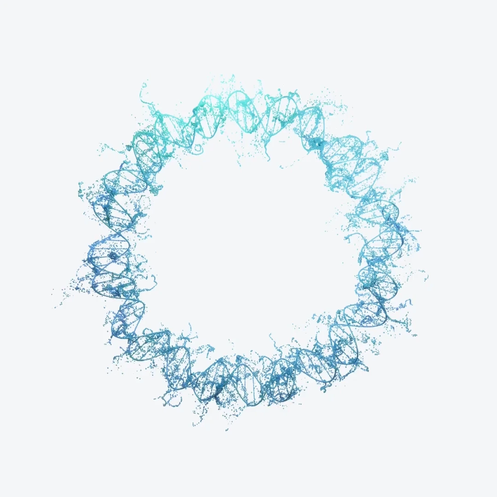
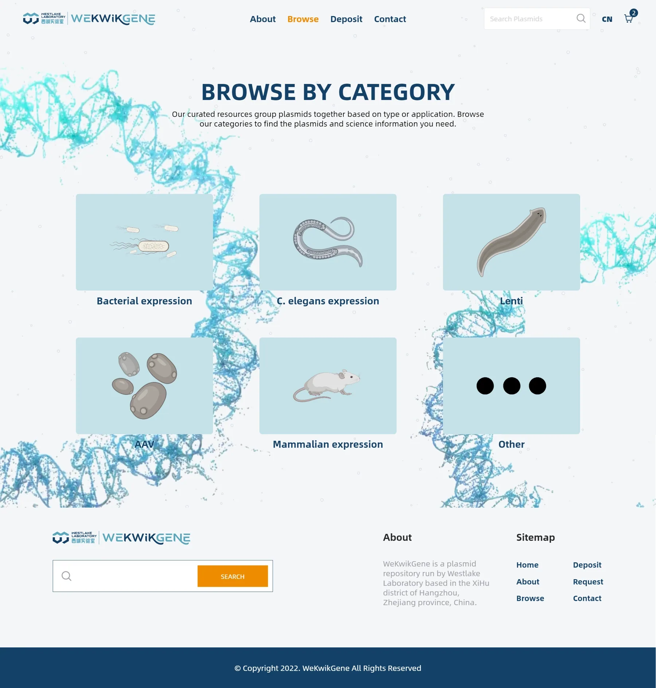
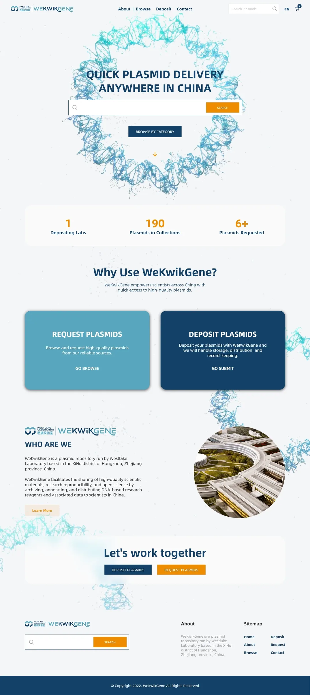
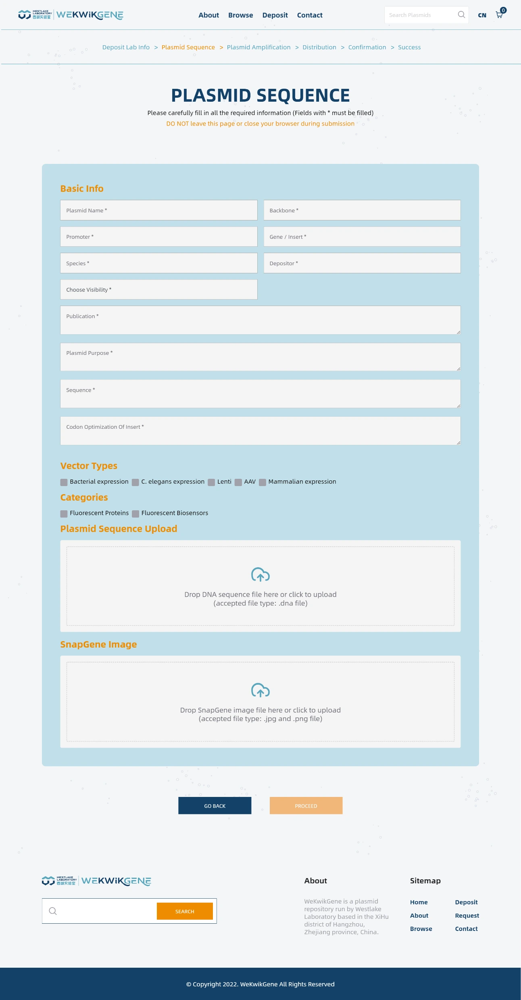
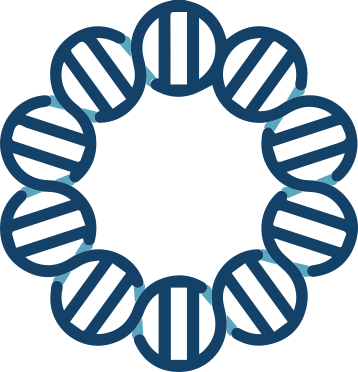
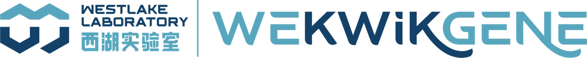

Research · Identity & digital platform
Science,
shared.
An identity and digital platform for finding and sharing research materials.

WeKwikGene
Research · Identity & digital platform
- Visual identity
- UX/UI & website
- 3D modelling
Complex information.
A clearer path.
Goal
Make plasmid information easier to find, evaluate and share.
Solution
Connect the identity, searchable catalogue and contribution flows around researchers’ tasks.
Scientific clarity. Recognisable form.
Structure
Information grouped by the task.
Recognition
The original plasmid symbol.
Continuity
One identity across public and admin views.
The palette
- Scientific blue#144168 · Primary
- Aqua#59A7BE · 2024 case palette
- Orange#EE8D00 · 2024 case palette
- Light ground#F5F6F8 · Case-study ground

The work


The mark



Notes
Original 2022–24 design and website records. Client-supplied database content is separate from design and development. Later proposed phases are not represented as delivered.
Have a similar business problem?
Bring us the problem.
You do not need to know which service you need. Start with the problem, or run the free audit and let the evidence choose the next step.